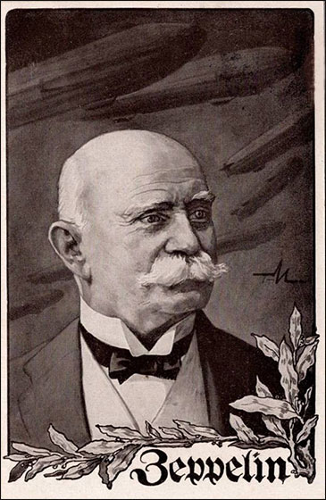
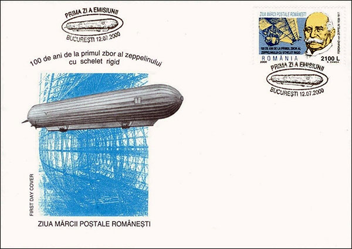
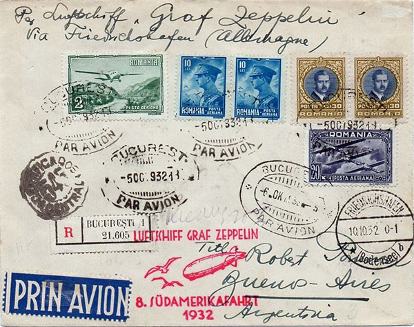
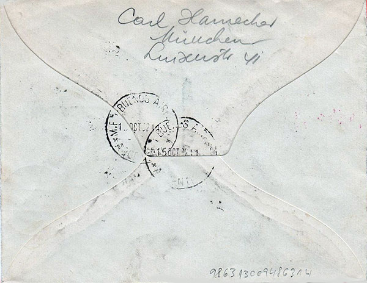
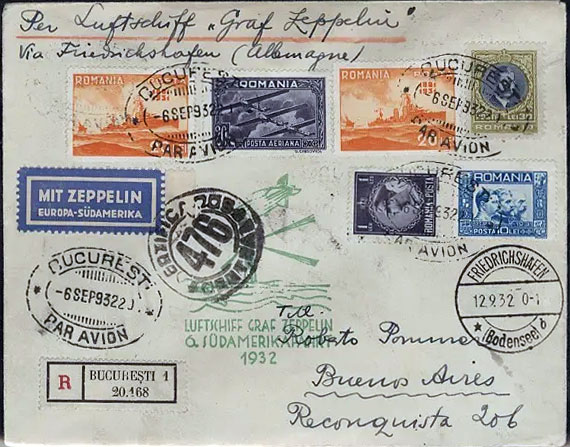
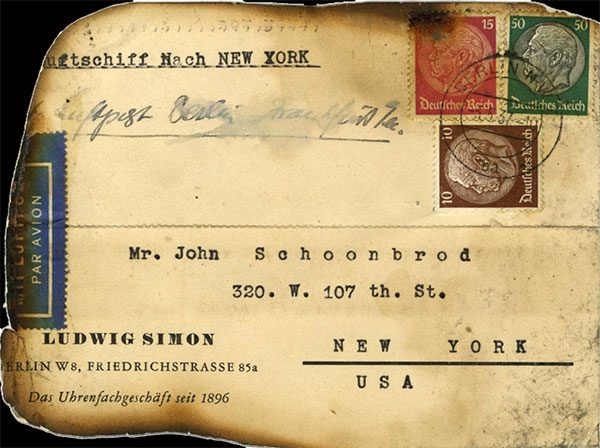
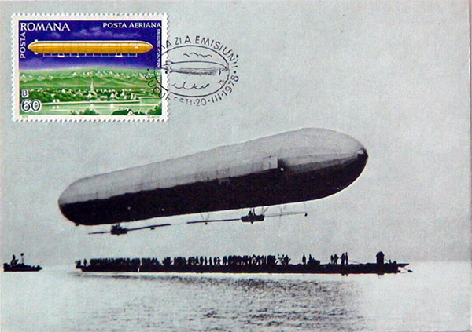
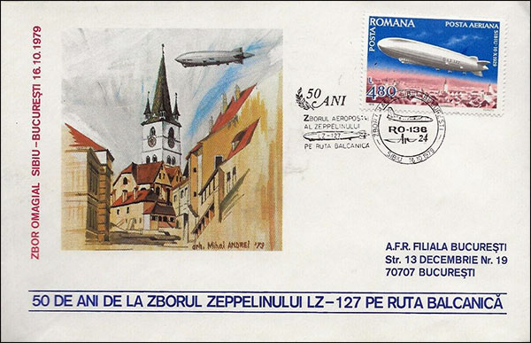
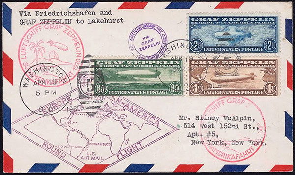

Published: August 11, 2023 . Revised: August 12, 2023. |
Zeppelins in Romania and Worldwide
Victor Manta
Introduction
Zeppelins revolutionized mail delivery by transporting letters and postal materials swiftly across continents. Their speed and reliability marked a new era in intercontinental communication, allowing letters to traverse long distances in a matter of days rather than weeks. This innovation bridged geographical gaps and facilitated global connections.
To send post from different countries to Friedrichshafen for delivery by zeppelins, a sender would typically follow established postal procedures. They would visit their local post office, pay the required postage, and hand over the mail to be transported. These letters and parcels would be sorted, stamped, and prepared for zeppelin transport.

Fig.1. Graf Ferdinand von Zeppelin (1838 - 1917) - PostcardUpon arrival in Friedrichshafen, the mail would be received and processed by the zeppelin company's postal authorities. It would then be sorted according to its final destination. The zeppelin's onboard post office staff played a critical role in this process. Once the zeppelin reached its destination city, the mail would be handed over to the local postal authorities for final delivery to the addressees.

Fig. 2. Romanian year 2000 FDC that commemorates the first zeppelin flightThe above envelope, issued by the Romanian Post in 2000, commemorates 100 years since the first flight of the rigid-frame zeppelin.
Zeppelins in Romania
In the early 20th century, Romania also embraced the innovative method of sending letters by zeppelins. The country established zeppelin routes that connected it with other European nations, enabling efficient and expedited mail delivery. This advancement in communication technology played a crucial role in fostering international connections and trade for Romania.

Fig. 4. Cover sent in Oct. 1932 by airship Graf Zeppelin from Bucharest to Buenos Aires, Argentina
Fig. 5. The back side of the above coverOn the envelope we see a selection of mostly high-value stamps, typical for this period, with a total face value of 102 lei. For comparison, then the average salary was around 120 lei, and a registered letter sent by plane to Argentina cost 12 lei. This made the sending price exorbitant for a typical Romanian citizen, but it was apparently within the reach of the German citizen mentioned on the back of the letter. We notice the incomplete address of the addressee, which apparently did not prevent the letter from reaching its destination.
All stamps are special, not belonging to the Romanian post office. Four of them are dated October 5, 1932, and the 5th indicates the following day, when the letter possibly left for Friedrichshaven, Germany, the departure point of the airship. Another stamp attests that on November 10 the envelope arrived at the location of the airship. A blurred stamp with the inscription "Certificados ??central" suggests the certification of the shipment. The stamp on the back indicates the date of October 15, the date of the airship's arrival in Buenos Aires, so the flight lasted about six days, a good performance compared to a letter sent by plane, which then arrived in 10-15 days.
Another cover, sent by the precedent flight, is presented below for comparison.

Fig. 6. Cover sent on Sep. 1932 from Bucharest to Buenos Aires, ArgentinaThe total value of the postage is 101 lei, very close to the one on the previous letter and which also corresponds very well with the company's shipping price in Reichsmark, converted at the current exchange rate.
I notice that this time the letter was sent with a previous race, on September 6, 1932, and it has an image showing that it is the balloon race in the 6th trip to South America. The recipient's address appears complete, and the "MIT ZEPPELIN Europa-Südamerica" label is attractive. I also noticed that the two letters seem to be sent to the same address and are written in the same handwriting, which leads me to believe that they have the same sender (a collector, a dealer?).
I find it interesting that the first envelope reached at an auction on ebay the price of US$ 329.50, while the other one was offered at a fixed price of $150 by a well-known trading house. A beautiful performance for an envelope sent from Romania!
The tragic end of the zeppelins era
Advancements in aviation technology, particularly the development of more efficient and safer airplanes, made zeppelins less competitive in terms of speed, cost, and reliability. The infamous Hindenburg disaster in 1937, where the German passenger airship LZ 129 Hindenburg caught fire while attempting to land, further eroded public confidence in zeppelins.

Fig. 7. Burned card from disastrous flight to New York of Hindenburg zeppelin in 1937The irresistible attraction of zeppelins
New zeppelin stamps and covers collectors can start today with recent philatelic issues, such as the nice ones or similar, shown below.

Fig. 8. Romanian maxxicard of 1978

Fig. 9. Romanian FDC of 1979. 50 years since the flight Sibiu - Bucharest, on Balkan routeThen, depending on their financial means at their disposal, they can venture into collecting postal issues from the zeppelin era. Below, on a cover, are my US favorites stamps, issued in 1930, Scott C13-15, that were used exclusively on mail carried via Graf Zeppelin on its European – Pan American flights.

Fig. 10. A round flight of 1930 by Graf Zeppelin via Friedrichshafen to Lakehurst, NJ, USASources: Google search, chatGPT, Bard, ebay, web, Wikipedia
Published: August 11, 2023 . Revised: August 12, 2023. |